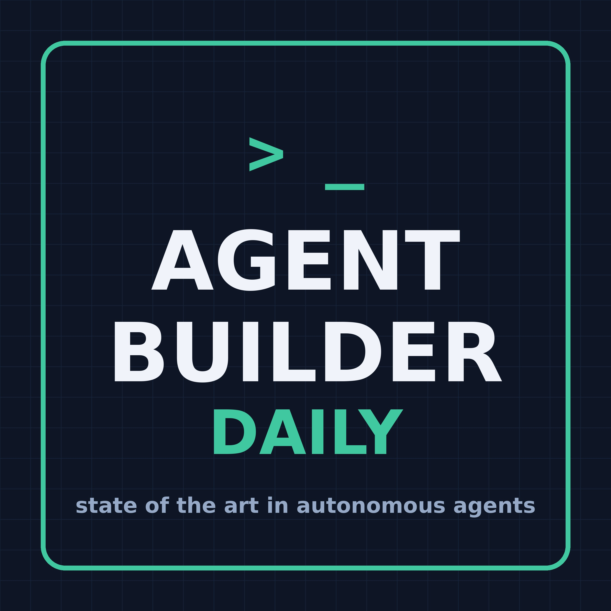

A daily ~10-minute briefing on the state of the art in building autonomous AI agents: memory, context engineering, skills, evals, sandboxing, user-data safety, harnesses, and more. Generated from a personal research wiki.
Subscribe: paste https://mulch-mgs.github.io/agent-pod-6031af8f/feed.xml into your podcast app.